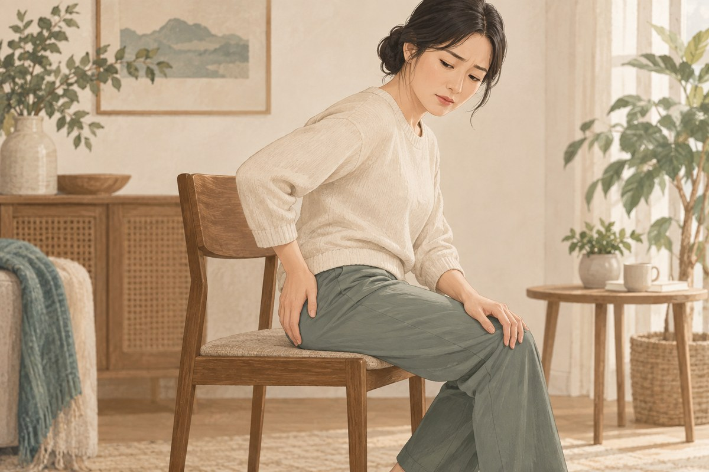
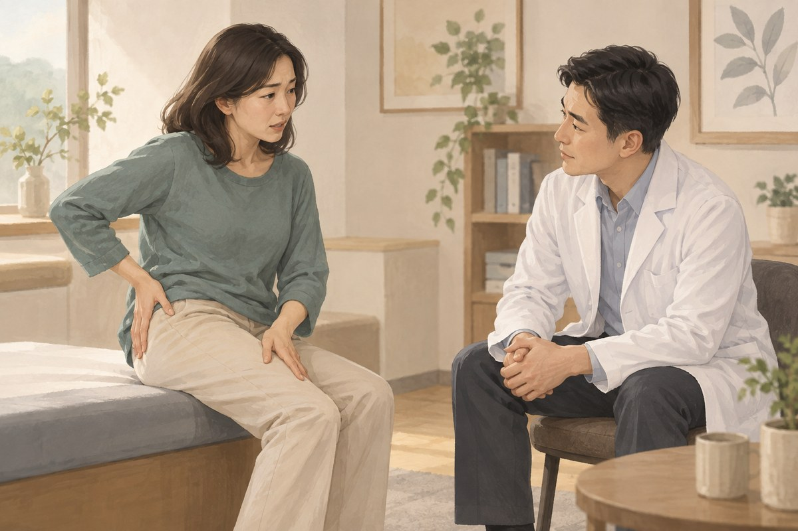

坐骨痛
坐骨痛通常指從下背或臀部沿著腿部延伸的疼痛、麻木、刺痛或無力。它是一組神經相關症狀，不是單一疾病名稱。症狀可能和椎間盤、脊椎狹窄或其他神經受刺激的情況有關，評估時要確認疼痛路徑、肌力與膀胱腸道警訊。
你是否有這些困擾？
- 疼痛從下背或臀部延伸到大腿、小腿或足部
- 久坐、久站、彎腰或走路後症狀加重
- 咳嗽、打噴嚏或用力時腿痛更明顯
- 腿部有麻木、刺痛、灼熱或電擊感
- 單側腿無力，走路容易拖腳或絆到
- 疼痛已影響睡眠、工作與行走

坐骨痛是什麼？
坐骨神經由下背一路延伸到腿部。當相關神經根受到刺激或壓迫時，可能出現沿著臀部與腿部延伸的疼痛、麻木、刺痛或無力，常以單側較明顯。
只有局部下背痛，不一定是坐骨痛。椎間盤突出、脊椎狹窄、退化變化與其他周邊組織問題都可能造成相似症狀，需要依神經分布與檢查判斷。
常見表現
放射性腿痛
疼痛可能從臀部沿著大腿後側或外側延伸，有時到小腿、腳底或腳趾。感覺可以是痠痛、灼熱、刺痛或電擊感。
麻木與感覺改變
腿部或足部可能出現麻木、針刺感或觸覺改變。症狀範圍有助於判斷可能涉及的神經位置。
肌力與行走變化
若出現抬腳困難、腳容易拖地、無法穩定踮腳或腳跟走路，可能代表神經功能受到影響，需要儘快評估。
常見相關因素
- 腰椎椎間盤突出或神經根發炎
- 脊椎狹窄與退化變化
- 外傷、搬重物或反覆彎腰扭轉
- 長時間坐姿與活動負荷突然改變
- 臀部深層組織造成類似放射症狀
- 少數感染、腫瘤或其他嚴重原因
哪些人需要更完整評估？
疼痛延伸到膝蓋以下、麻木持續、肌力下降或步態改變時，應接受神經與動作評估。症狀持續、反覆發作，或有癌症、感染、免疫抑制及明顯外傷史者，也需要更完整檢查。
可以先觀察什麼？
記錄疼痛從哪裡開始、延伸到哪個位置、是否單側，以及坐、站、走、彎腰、咳嗽與睡姿的影響。也可觀察腳是否容易拖地、上下樓是否無力，但不要反覆做會誘發劇烈放射痛的測試。
什麼情況需要盡快就醫？
若兩側腿同時出現嚴重或快速惡化的無力、麻木，會陰或肛門周圍感覺變差，突然無法排尿、尿失禁，或失去排便控制，應立即到急診評估。
若伴隨高燒、近期嚴重外傷、不明原因體重下降、夜間痛醒、癌症病史，或單側肌力持續下降，也需儘快就醫。
連邦中醫如何評估坐骨痛？
醫師會先了解疼痛路徑、持續時間、誘發動作與外傷史，再檢查腰椎與髖部活動、神經張力、肌力、感覺與反射相關表現。評估重點是判斷症狀是否來自神經根，以及日常功能受到多少影響。
若出現馬尾症候群警訊、進行性肌力下降或其他嚴重原因，會優先轉介急診或安排影像與專科檢查。

針灸傷科診療方向
中醫可從腰腿痛、痹證與筋傷等方向辨證，並結合神經分布、腰椎活動、臀部與腿部功能評估。常見方向包括：
寒濕痹阻
腰腿冷痛、沉重，遇冷或潮濕時加重，熱敷後較舒服。治療方向以散寒除濕、通絡止痛為主。
氣滯血瘀
外傷、搬重物或急性扭拉後出現固定刺痛，動作受限明顯。治療著重行氣活血、舒筋通絡。
肝腎虧虛
症狀反覆日久，腰膝痠軟、容易疲倦，活動後加重。治療會依全身表現評估補益肝腎、強筋健骨的方向。
辨證之外，仍需持續追蹤神經肌力與感覺變化。
連邦中醫的治療方式
一般針灸與不留針
依疼痛路徑、神經張力與活動限制安排，治療後重新比較腿痛、腰椎動作與行走功能。
浮針與針刀
浮針與針刀適用的組織層次不同。醫師會先確認症狀來源、解剖位置與風險，不會只因為腿痛就直接施作。
針灸整合物理治療
可把針灸與腰髖活動、核心控制、神經滑動及工作動作調整放在同一治療安排中，依神經症狀與恢復狀況調整。
日常照護
- 避免長時間維持同一姿勢，定時改變坐、站與走動
- 急性疼痛時選擇可接受的活動，不長期完全臥床
- 暫時減少反覆搬重、彎腰扭轉與會誘發腿痛的動作
- 症狀穩定後逐步恢復腰髖活動與肌力訓練
- 觀察麻木範圍、肌力與膀胱腸道功能是否改變
- 止痛藥依醫師或藥師指示使用
常見問題
坐骨痛可以用中醫治療嗎？
可以由醫師評估。針灸與傷科治療可依疼痛路徑、肌力、活動限制及中醫證型安排。若有膀胱腸道異常、會陰麻木或肌力快速下降，應先接受緊急評估。
腿麻就是坐骨神經被壓到嗎？
不一定。不同神經、周邊組織、血液循環及其他疾病也可能造成腿麻，需要依範圍、肌力、反射與誘發動作判斷。
有坐骨痛一定要照 MRI 嗎？
不一定。是否需要影像要看症狀嚴重度、持續時間、神經功能與警訊，由醫師評估。
坐骨痛可以拉筋嗎？
部分人適合溫和活動，但強力拉伸可能讓神經症狀加重。若動作引起更遠端的腿痛、麻木或無力，應停止並接受評估。
可以直接做針刀嗎？
不能只依症狀名稱決定。醫師需要先確認是神經根、關節、肌肉或其他位置，再評估適合的治療方式。
🏥 讓專業團隊成為您的健康後盾
就診時可說明疼痛位置、持續時間、誘發動作、外傷史及麻木或無力的情況，並攜帶目前用藥及檢查資料。
105 臺北市松山區南京東路四段69號1樓